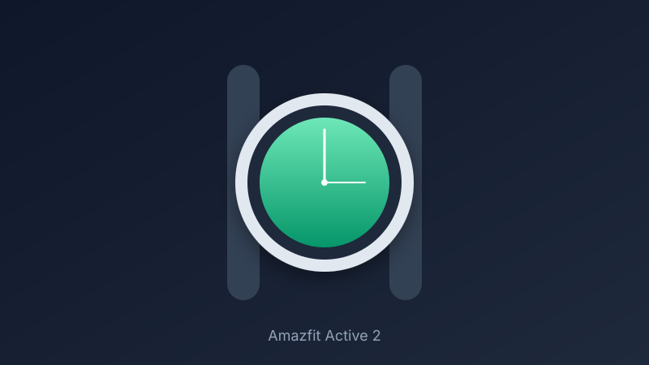

Amazfit Active 2 Review: Bright Display and GPS Maps Under $150
At around $80 to $130, the Active 2 delivers a stainless-steel look, 2,000-nit AMOLED, offline maps, and real multi-day battery that undercuts far pricier watches.
Budget smartwatches used to force a choice between looks and features. The Amazfit Active 2 largely ends that compromise. Street prices often sit between $80 and $100 for the standard model and around $130 for the premium version with sapphire glass, keeping it comfortably under $150 while delivering hardware that feels more finished than the price implies.
The 1.32-inch AMOLED display is the immediate highlight. Peak brightness reaches about 2,000 nits, so outdoor readability stays strong even in direct sun. Resolution is 466 by 466, and the round face with a stainless-steel bezel gives the watch a classic, wearable style rather than a pure fitness-tracker aesthetic. At roughly 30 grams without the strap, it sits lightly on the wrist for all-day use.
Battery life is the practical advantage. Amazfit rates the 270mAh cell for up to 10 days of typical use, dropping to around five days with heavier GPS and always-on monitoring. Real-world mixed use often lands in the 7-to-9-day range, which is still far better than most Wear OS or Apple Watch options. Continuous GPS is listed around 21 hours, enough for long runs or hikes without daily charging.
Tracking and navigation punch above the price. Built-in GPS with five satellite systems, free offline maps with turn-by-turn guidance, and more than 160 sport modes cover running, cycling, strength training, and more. Heart rate, SpO2, sleep staging, stress, and skin temperature sensors feed into the Zepp app, which also offers readiness scores and basic AI coaching. Notifications, call alerts, and music controls work with both Android and iOS. The trade-offs are expected at this price: single-band GPS rather than dual-frequency, Zepp OS instead of a full app store, and no NFC payments on the base model in most regions.
If you want a stylish daily driver that prioritizes battery life, outdoor tracking, and a bright screen over app ecosystems and payments, the Amazfit Active 2 is one of the clearest values under $150 right now. It will not replace a full Galaxy Watch or Apple Watch for smart features, but for fitness, notifications, and a watch you rarely charge, it earns the recommendation.
Key Takeaways
- Price Range: ~$80 – $130 (Amazon, standard and premium versions)
- Display: 1.32-inch AMOLED, up to 2,000 nits, stainless-steel bezel
- Battery: up to 10 days typical use, ~21 hours continuous GPS
- Tracking: built-in GPS, offline maps, 160+ sports modes, 5 ATM